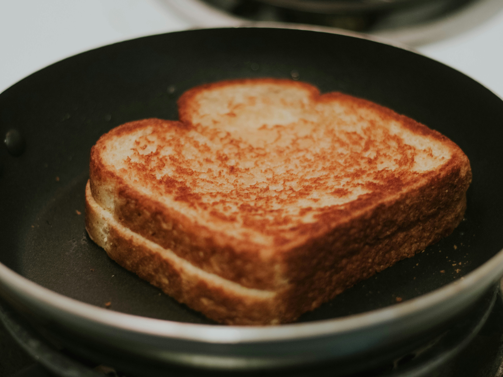

Home

Description
This recipe bring you back to good health!
Ingredients
- 2 slices sandwich bread
- 2 tablespoons softened butter
- 2 slices cheddar cheese
- 1 slice American or mozzarella cheese
- Pinch of salt (optional)
Directions
- Spread butter evenly on one side of each slice of bread.
- Heat a skillet over medium-low heat.
- Place one slice of bread in the skillet, butter side down.
- Layer the cheese on top, then cover with the second slice of bread, butter side up.
- Cook for 3 to 4 minutes, until the bottom is deep golden brown.
- Carefully flip the sandwich and cook for another 3 minutes, until the cheese is melted and the second side is golden.
- Let it rest for 1 minute, then slice in half and serve warm.